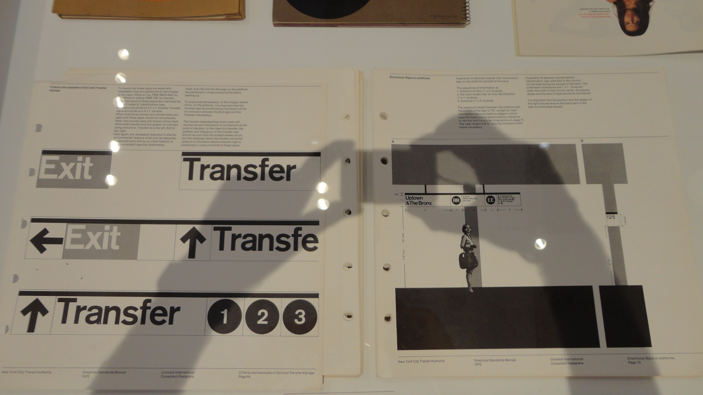
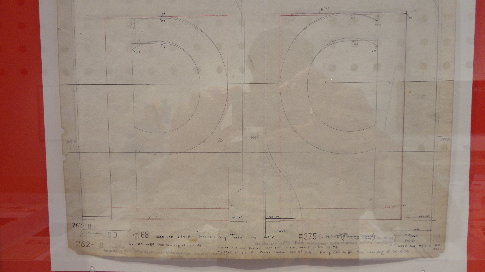
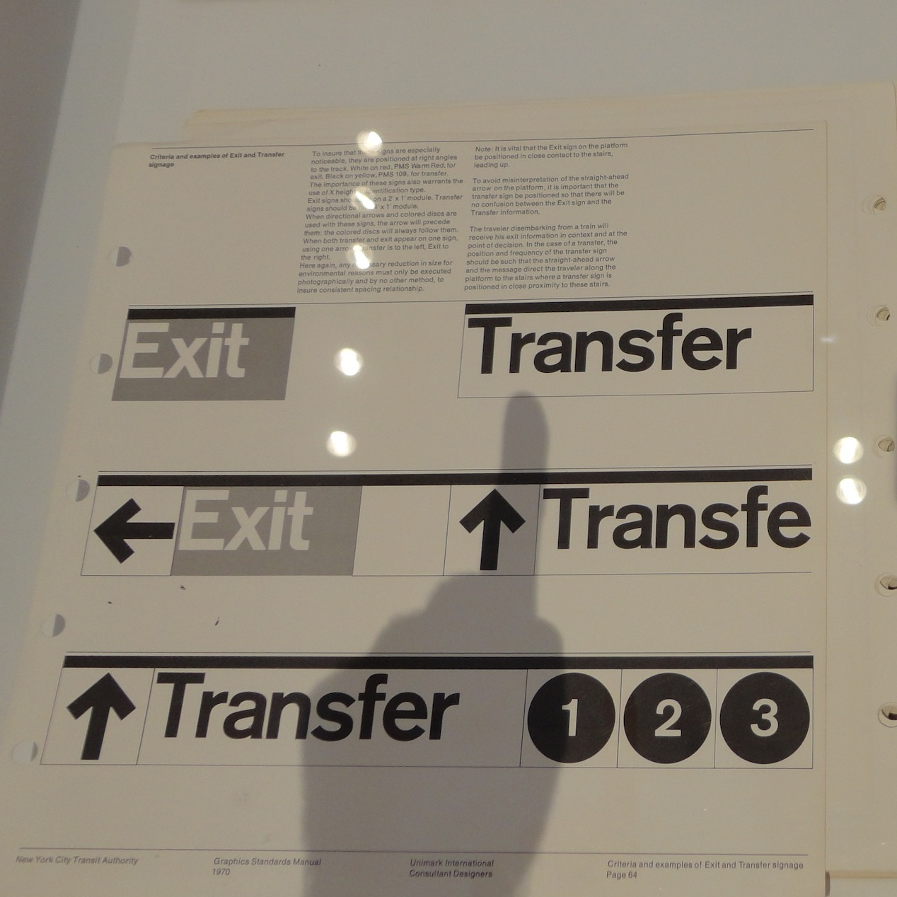

At the 2014 aiga show “Century-100 years in Type design” in NYC, interesting works of art are displayed on the walls and on huge tables protected by glass. This display can only be partially enjoyed by the viewers who have to negotiate with their own shadows and reflections when admiring the works.
After several frustrating attempts to get decent photos without interfering shadows and reflections, we gave up and decided to actually use the shadow as a tool. Here is the photo we are going to use in class to pinpoint how Helvetica was not the signage typeface originally selected by Unimark for the New York City Subway.

 2014, New York. Image Credit: GP